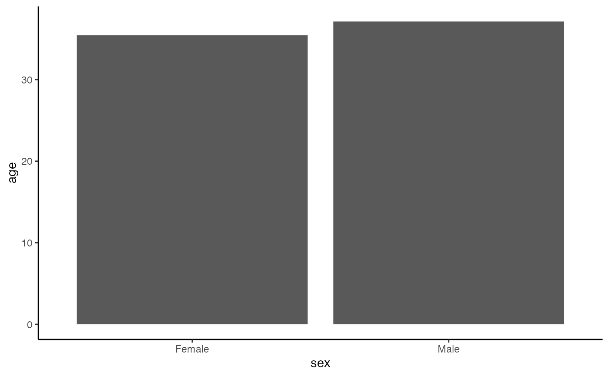

To start using the data we recommend first loading the package by typing the following code into your R console.
Once the package is loaded, we can start calling the data under the name anxiety. The documentation for the data itself, as well as for each variable, can be viewed by typing ?anxiety into your R console.
Plotting the data
To visualise the data in the package, we recommend using the ggplot2 library, which offers a whole range of functions that are driven by a common principle, the grammar of graphs. To get started we can load it using the library() function, as well as any additional packages we might need.
library(ggplot2) # Main package for graphics
library(ggside) # For adding marginal distributions
library(ggsci) # For wider choices on coloursThis will allow us to generate an informative graphic that is visually pleasing.
See code
# Remove extreme values
remove_outliers <- quote(-c(which.min(pits_global), which.max(pits_global)))
fig1 <- ggplot(data = anxiety[i = eval(remove_outliers)],
aes(x = sqrt(pits_global),
y = sqrt(beck_global))) +
# Dot size relative to the number of observations
geom_count(shape = 21, color = "black", aes(fill = zone), show.legend = FALSE, alpha = 0.5) +
# Colour pallete from the 'New England Journal of Medicine'
scale_color_manual(values = ggsci::pal_nejm()(2), aesthetics = c("fill", "color")) +
# Adding LOESS regression line
geom_smooth(method = "loess", se = F, aes(col = zone)) +
# Adding marginal distributions
ggside::geom_xsideboxplot(mapping = aes(y = zone, fill = zone), orientation = "y",
outlier.shape = 21, outlier.alpha = .5, alpha = 0.5) +
ggside::geom_ysideboxplot(mapping = aes(x = zone, fill = zone), orientation = "x",
outlier.shape = 21, outlier.alpha = .5, alpha = 0.5) +
# Removing labels from marginal distributions
ggside::scale_xsidey_discrete(guide = guide_none()) +
ggside::scale_ysidex_discrete(guide = guide_none()) +
# Modify axis labels
labs(x = expression(sqrt("PSQI")),
y = expression(sqrt("BAI")),
col = "Confinement",
fill = "Confinement") +
# Modify font size and family
theme_linedraw(base_family = "Times",
base_size = 16) +
# Moving legend on top and removing background grind
theme(legend.position = "top",
panel.grid = element_blank(),
ggside.panel.scale.x = .15,
ggside.panel.scale.y = (.15 * 3 / 4))
In this example we have recreated a figure that uses the square root of each variable as a normalisation method for the visualisation of a dot plot with three noticeable dimensions: beck_global, pits_global and the sample size relative to each dot (which is represented as the size of the dot on the graph).
Other visualisation strategies could include greater transparency for each point, which is especially useful if we have a very large sample.
Obtaining descriptive statistics
Assuming we want to calculate the average age while separating the results by the sex and zone variables, we can do this with just one line of code:
anxiety[, .(mean_age = mean(age)), .(sex, zone)]
#> sex zone mean_age
#> 1: Female CZ 30.46222
#> 2: Male CZ 33.11290
#> 3: Female UZ 40.24034
#> 4: Male UZ 39.69072The reason our syntax is so concise is because we are implicitly using the data.table package which allows us to use the DT[i, j, by] syntax. For more information about this package, we recommend reading its documentation.